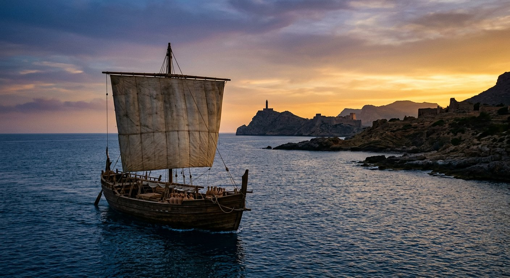

La route maritime
D'Alexandrie à Rome par la mer
Les papyrus ont voyagé par bateau : la Septante gagne la Méditerranée, les codex grecs remontent vers Rome, la Peshitta suit les routes caravanières. La mer est la première autoroute du texte.